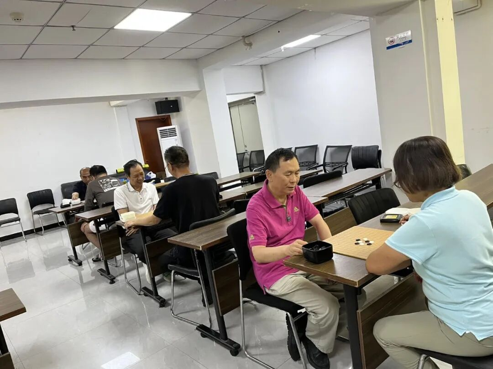
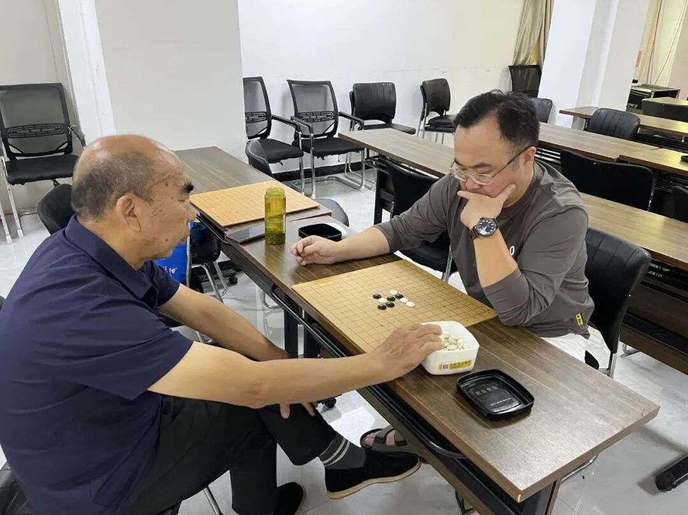
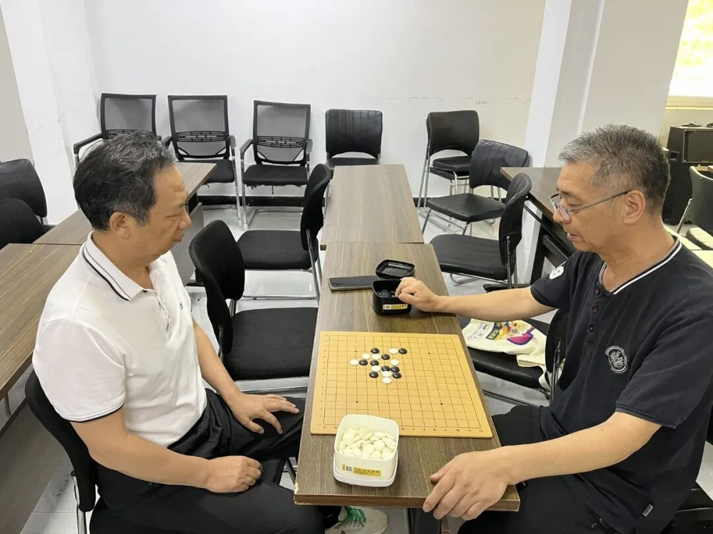

月度手谈，棋王落定
天元社区五子棋月度对弈赛决出九月棋王
以棋会友，乐在对弈。为丰富辖区居民业余文化生活，弘扬传统棋艺文化，营造积极向上、文明和谐的社区氛围，9月6日，天元社区五子棋月度对弈赛在社区二楼会议室圆满落幕。

安静而热烈的一室棋局
参赛选手精神饱满、沉着应战。比赛过程中，赛场氛围安静而热烈，棋手们屏气凝神、从容布局，在方寸棋盘之间排兵布阵、落子从容。每一步深思熟虑的落子、每一次精妙巧妙的攻防，都充分展现出扎实的棋艺功底和良好的竞技素养，上演了多场精彩绝伦的脑力对决。


经过多轮紧张激烈的层层角逐，辛仲庙获本次赛事冠军，摘得九月五子棋月度棋王荣誉。
- 1九月月度棋王：辛仲庙
全年月度棋王一览
截止目前，除本月棋王外，还有14人获得月度棋王和各类市级赛事冠军。原文按月份列出名单，此处整理成表，便于对照本站其他几篇赛事报道：
| 月份 | 赛事 | 冠军 / 获奖者 |
|---|---|---|
| 2月 | “庆新春”交流赛 | 公开组李丹、大众组吕梓皓 |
| 3月 | “智享春日”交流赛 | 公开组赵严、大众组潘为民、双人组潘冠臣与乔仕鑫 |
| 4月 | 王府井站棋王海选赛 | 公开组潘冠臣、大众组魏子清、双人组张泽熙与王浩宇 |
| 5月 | “庆六一”交流赛 | 亲子双人组魏辰壹与魏子清、少儿组杨祎帆、双人组唐碧与潘冠臣 |
| 6月 | “月度棋王”交流赛 | 申明增 |
| 7月 | “月度棋王”交流赛 | 廖汉娇 |
| 8月 | “月度棋王”海选赛 | 唐碧 |
| 9月 | 天元社区月度对弈赛 | 辛仲庙 |
据悉，10、11、12三个月还将举行交流活动，以选拔更多优秀棋手参加年度棋王争夺。